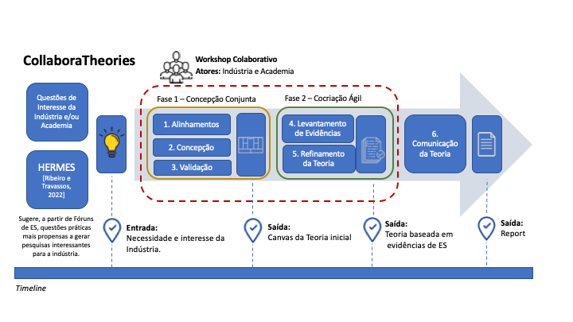

CollaboraTheories: Construção Colaborativa de Teorias Baseadas em Evidências em Engenharia de Software
A CollaboraTheories foi desenhada para ser uma abordagem que, em essência, envolve o desenvolvimento de um workshop colaborativo, trazendo atores da indústria e da academia, visando alinhar o entendimento das suas necessidades e interesses para a construção de novas teorias baseadas em evidências em ES (ver mais em: https://collaboratheories.github.io.). A primeira fase da CollaboraTheories envolve a aplicação de um template que possa apoiar a concepção conjunta de teorias de Engenharia de Software a serem investigadas, a partir da necessidade dos atores da indústria e o alinhamento com atores da academia, em um workshop colaborativo. Este método contempla delinear uma versão preliminar da teoria, envolvendo a identificação dos construtos, que podem ser entendidos como as entidades da teoria, a definição das proposições, as quais estabelecem as relações que descrevem como os construtos interagem, destacando ainda a explicação do porquê se acredita que as relações são verdadeiras, o escopo da teoria, englobando onde, quando e a quem a teoria se aplica, entre outros pontos relevantes a serem considerados.
Após a concepção conjunta da teoria preliminar, a segunda fase da CollaboraTheories envolve promover a colaboração através de uma cocriação ágil entre a indústria e a academia para o levantamento de evidências e refinamento da teoria construída. Neste momento estamos amadurecendo a abordagem, detalhando, por exemplo, uso e/ou aplicação de sprints, definição das melhores maneiras para representação dos conhecimentos gerados a partir dessa colaboração, entre outros pontos.
O objetivo principal deste estudo é apoiar a construção colaborativa, por atores da indústria e da academia, de teorias baseadas em evidências em Engenharia de Software (ES), procurando ainda, comunicar melhor os resultados gerados a partir da atividade realizada. Para alcançar este objetivo, esperamos responder as seguintes questões de pesquisa:
Questão 1:Como podemos apoiar a construção colaborativa, por atores da indústria e da academia, de teorias baseadas em evidências em Engenharia de Software (ES)?
Questão 2: Como comunicar os resultados gerados através da CollaboraTheories para a indústria de maneira mais efetiva?
Anrafel Fernandes Pereira - Doutorando em Informática - PUC-Rio - anrafel.fernandes@gmail.com